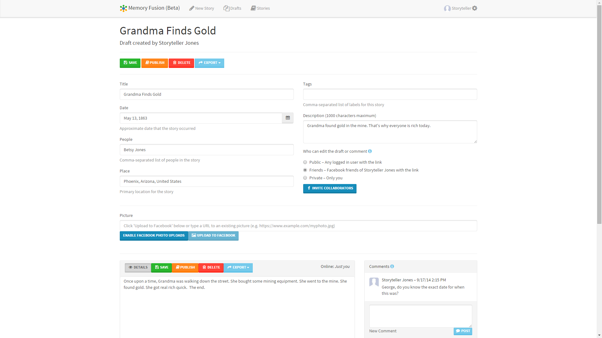
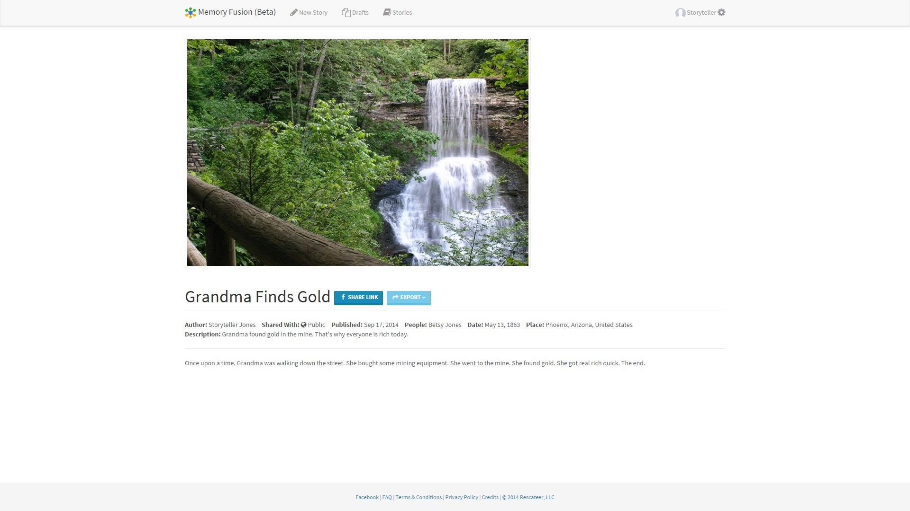
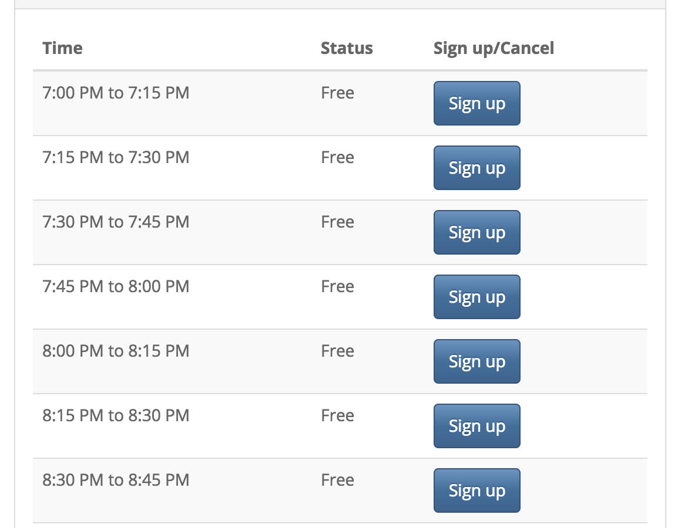

I'm a full stack software developer with ten years of professional experience. I
specialize in crafting responsive, single page applications for web and
mobile.
myNextGear is an AngularJS
financial web application for car dealerships. A mobile version is
also supported in
iTunes and
Google play.
My contributions to the myNextGear application included playing a critical role in
internationalizing and localizing the application for an important
launch to the French Canadian market. I also played a major role
in putting in place a continuous integration process using
Bamboo. Additionally,
I took part in improvements such as
Kelley Blue Book integration
and putting testing environments in place using
tools such as Protractor and Frisby.js.
MemoryFusion


MemoryFusion is a responsive
web application that provides social, real-time family history story
collaboration.
It features a real-time editor for writing family history stories, tools to discover
and read stories, and Facebook sharing.
Users log in with Facebook Login. They can write new stories or read stories published
by others. When writing a new story, they can share the link via
Facebook and edit the story in real time with other collaborators.
Users can provide metadata about the story such as the date, place,
people and other tags. This metadata is also synced for all collaborators
during editing and can also be used later to search published stories.
Several views are provided for managing story drafts and for searching for stories
to read. A feed view displays the latest stories in a familiar social
feed layout. A table view allows for searching stories based on any
metadata property. A thumbnail view fills the screen with images
and story descriptions similar to Pinterest but with more emphasis
on the textual content.
Memory Fusion was built with my standard web technology stack. One of the key development
challenges was managing access rights to the stories since there
are three levels of privacy that can be set (private, Facebook friends,
public). Another development challenge was the authentication and
authorization components that had to play nice with Facebook Login,
a stateless Web API and the real-time collaboration.
Simply Status
Simply Status is Facebook.com web application for desktop (canvas application) that
provides a more concise Facebook news feed.
It reads your news feed and only shows you status updates from your friends. It utilizes
local browser storage to cache Facebook API calls to conserve bandwidth
and make the app faster.
SOS Friend Alert
SOS Friend alert is another Facebook.com web application for desktop that searches
your Facebook news feed and friend timelines and looks for keywords
and phrases that might be important. Important statuses (alerts)
are highlighted for you and brought to the top of your feed.
It uses regular expressions for its searches which provides a very efficient way
to perform searches. However, since there is no additional intelligence
the user can expect a lot of false positives in the results.
The main technical challenge in this application is that Facebook can suddenly reject
what it may consider excessive API calls. However, there is no hard
limit on this. Therefore, the app has to throttle API calls to avoid
failure.
An Interview Scheduling App

Early in 2014 I developed an interview scheduling web application for a local organization.
The application makes it much easier for clients to schedule interviews
(replaces an ad hoc email approach) and reduces incidents of missed
appointments and misinformation. Thus, it has significantly reduced
the administrative burden and increased the customer service level.
The application allows clients to schedule their own appointments directly. It sends
automated email reminders the day of the appointment. It provides
an ICalendar (ics) feed for the interviewers that can be used from
any common calendar app on a mobile device.
The application uses SendGrid for email notifications and Azure Table Storage (NoSQL)
for its backend data storage.
One challenging aspect of the application is the handling of time zones. Commonly
in applications the local time for the user is displayed but for
this case the local time for the location for the interviews is displayed.
Probably the most complex aspect of the site is the two authentication options. The
first involves a modified Facebook Login flow which requires a typical
Facebook Login augmented with a query from the server to Facebook
(using the Graph API) to verify their membership in one of the organization's
Facebook groups. At this point in the login flow, if the user is
not a member of one of the approved Facebook groups, the administrator
is emailed with the user’s contact information so that he can verify
their membership and add the user to the approved Facebook group.
Meanwhile the user can still prove membership in the organization
and immediately authenticate by providing a URL to their organizational
profile—if it is connected to their Facebook profile, then
they are authenticated.
The second login flow allows the users to provide an organizational user name and
password that is authenticated via a public endpoint with their main
organization’s web site.
Since a user may only have a Facebook account or an organization account, both authentication
methods are provided.
A Modeling & Simulation App
Late in 2013 I lead a small team to develop a single page web application for a large
corporation. The application aims to significantly decrease the time
it takes for running simulations and provides a dashboard for viewing
results. I developed a custom single page application framework using
Knockout.js for the project. On the server side there were a few
interesting features including integration with Phoenix Integration
software such as PHX ModelCenter® to run simulations and a real-time
API for clients to receive simulation progress updates.